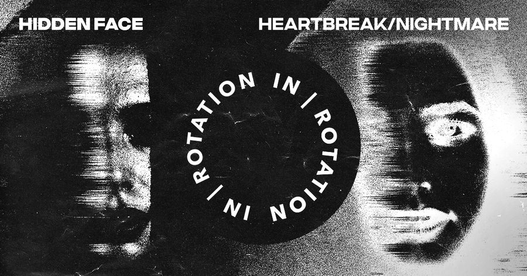

Hidden Face Builds the Mystery and Melody With ‘Heartbreak / Nightmare’ on IN / ROTATION


Hidden Face is a new French producer whose name refers directly to his enigmatic quality. Though once he was part of what’s cryptically referred to as a “famous duo,” nowadays his identity is concealed behind a mystifying mask. According to the man himself, the alias is inspired by the hidden faces we all conceal from the world.
The response from fans and the DJ world alike to this new project has been swift. Though he’s been releasing music for little more than a year, he ended 2018 with more than a million SoundCloud streams, plus support from the likes of Alison Wonderland and Jauz.
Hidden Face further cultivates his mystery this year with a new two-shot release on IN / ROTATION, “Heartbreak” and “Nightmare” both showcasing his moody, melodic style. We thought it was time to peek behind the mask and find out more about the new project.
Hidden Face’s Heartbreak / Nightmare EP is available here.
How is 2019 starting off for Hidden Face?
There are ups and downs, but everything is good when I talk about music. 2019 begins in a good way. We have so many things planned, so much music about to come out, and we just released my new EP with you guys. I’m really excited.
What’s the story behind this project, and what inspired this special alias?
When I started to think about creating this alias last year, I knew I wanted to call it Hidden Face. Everyone has a hidden face, and I’m fascinated by the fact that we all have a part inside that wants to express herself—this where the name comes from. The idea of wearing a mask came naturally. I just wanted to make people enjoy what I’m doing and not who I am.
How would you describe the Hidden Face sound?
My sound is emotional and spacial. I try to bring epic and beautiful melodies to a techno/house, minimal, and progressive type of electronic music.
You hail from France. Is there such a thing as the “French touch,” and how does this feed into what you do as a DJ/producer?
There’s definitely a “French touch.” For me, it’s more a way of thinking than a musical genre. It’s more like a vision, a way to share and to enjoy what we’re all doing, and it totally feeds what I do. I think inspiration comes first from what we give and what we receive.
You’ve got a brand-new, two-track release on IN / ROTATION. Tell us a bit about how you connected with the label, and the story behind the fine tracks featured here.
We met at the Amsterdam Dance Event last year… I like the fact that this release is born from a meetup, and not from a traditional email exchange.
What’s on the agenda for the rest of the year?
A lot of new music, and I hope that I’ll be able to play my music around everywhere I can soon.
Follow Hidden Face on Facebook | Twitter | SoundCloud
Follow IN / ROTATION on Facebook | Twitter | SoundCloud